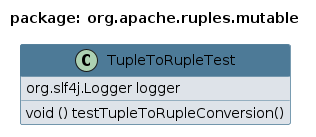

Package org.apache.ruples.mutable
Class TupleToRupleTest
java.lang.Object
org.apache.ruples.mutable.TupleToRupleTest
Validates the following methods:
1. `Tuple.of(...)` - A factory method to create a Tuple.
2. `Ruple.toRecord(Tuple)` - Converts a Tuple to a Ruple.
This involves comparing each value between the Ruple and the resulting Tuple.
Class Diagram:

- Since:
- 2024-1118
- Author:
- ClusterBR
Example Usage and Test Case:
public class TupleToRupleTest { private static final Logger logger = LoggerFactory.getLogger(TupleToRupleTest.class); @Test public void testTupleToRupleConversion() { Tuple1<String> tuple1 = Tuple1.of("Value1"); Tuple2<String, Integer> tuple2 = Tuple2.of("Value1", 2); Tuple3<String, Integer, Boolean> tuple3 = Tuple3.of("Value1", 2, true); Tuple4<String, Integer, Boolean, Double> tuple4 = Tuple4.of("Value1", 2, true, 4.0); Tuple5<String, Integer, Boolean, Double, Character> tuple5 = Tuple5.of("Value1", 2, true, 4.0, 'A'); Tuple6<String, Integer, Boolean, Double, Character, String> tuple6 = Tuple6.of("Value1", 2, true, 4.0, 'A', "Six"); Tuple7<String, Integer, Boolean, Double, Character, String, Long> tuple7 = Tuple7.of("Value1", 2, true, 4.0, 'A', "Six", 7L); Tuple8<String, Integer, Boolean, Double, Character, String, Long, Float> tuple8 = Tuple8.of("Value1", 2, true, 4.0, 'A', "Six", 7L, 8.0f); Tuple9<String, Integer, Boolean, Double, Character, String, Long, Float, Short> tuple9 = Tuple9.of("Value1", 2, true, 4.0, 'A', "Six", 7L, 8.0f, (short) 9); Tuple10<String, Integer, Boolean, Double, Character, String, Long, Float, Short, Byte> tuple10 = Tuple10.of("Value1", 2, true, 4.0, 'A', "Six", 7L, 8.0f, (short) 9, (byte) 10); Tuple11<String, Integer, Boolean, Double, Character, String, Long, Float, Short, Byte, String> tuple11 = Tuple11.of("Value1", 2, true, 4.0, 'A', "Six", 7L, 8.0f, (short) 9, (byte) 10, "Eleventh"); Tuple12<String, Integer, Boolean, Double, Character, String, Long, Float, Short, Byte, String, Boolean> tuple12 = Tuple12.of("Value1", 2, true, 4.0, 'A', "Six", 7L, 8.0f, (short) 9, (byte) 10, "Eleventh", false); Ruple1<String> ruple1 = Ruple1.toRecord(tuple1); Ruple2<String, Integer> ruple2 = Ruple2.toRecord(tuple2); Ruple3<String, Integer, Boolean> ruple3 = Ruple3.toRecord(tuple3); Ruple4<String, Integer, Boolean, Double> ruple4 = Ruple4.toRecord(tuple4); Ruple5<String, Integer, Boolean, Double, Character> ruple5 = Ruple5.toRecord(tuple5); Ruple6<String, Integer, Boolean, Double, Character, String> ruple6 = Ruple6.toRecord(tuple6); Ruple7<String, Integer, Boolean, Double, Character, String, Long> ruple7 = Ruple7.toRecord(tuple7); Ruple8<String, Integer, Boolean, Double, Character, String, Long, Float> ruple8 = Ruple8.toRecord(tuple8); Ruple9<String, Integer, Boolean, Double, Character, String, Long, Float, Short> ruple9 = Ruple9.toRecord(tuple9); Ruple10<String, Integer, Boolean, Double, Character, String, Long, Float, Short, Byte> ruple10 = Ruple10.toRecord(tuple10); Ruple11<String, Integer, Boolean, Double, Character, String, Long, Float, Short, Byte, String> ruple11 = Ruple11.toRecord(tuple11); Ruple12<String, Integer, Boolean, Double, Character, String, Long, Float, Short, Byte, String, Boolean> ruple12 = Ruple12.toRecord(tuple12); assertEquals(tuple1.getV1(), ruple1.first()); assertEquals(tuple2.getV1(), ruple2.first()); assertEquals(tuple2.getV2(), ruple2.second()); assertEquals(tuple3.getV1(), ruple3.first()); assertEquals(tuple3.getV2(), ruple3.second()); assertEquals(tuple3.getV3(), ruple3.third()); assertEquals(tuple4.getV1(), ruple4.first()); assertEquals(tuple4.getV2(), ruple4.second()); assertEquals(tuple4.getV3(), ruple4.third()); assertEquals(tuple4.getV4(), ruple4.fourth()); assertEquals(tuple5.getV1(), ruple5.first()); assertEquals(tuple5.getV2(), ruple5.second()); assertEquals(tuple5.getV3(), ruple5.third()); assertEquals(tuple5.getV4(), ruple5.fourth()); assertEquals(tuple5.getV5(), ruple5.fifth()); assertEquals(tuple6.getV1(), ruple6.first()); assertEquals(tuple6.getV2(), ruple6.second()); assertEquals(tuple6.getV3(), ruple6.third()); assertEquals(tuple6.getV4(), ruple6.fourth()); assertEquals(tuple6.getV5(), ruple6.fifth()); assertEquals(tuple6.getV6(), ruple6.sixth()); assertEquals(tuple7.getV1(), ruple7.first()); assertEquals(tuple7.getV2(), ruple7.second()); assertEquals(tuple7.getV3(), ruple7.third()); assertEquals(tuple7.getV4(), ruple7.fourth()); assertEquals(tuple7.getV5(), ruple7.fifth()); assertEquals(tuple7.getV6(), ruple7.sixth()); assertEquals(tuple7.getV7(), ruple7.seventh()); assertEquals(tuple8.getV1(), ruple8.first()); assertEquals(tuple8.getV2(), ruple8.second()); assertEquals(tuple8.getV3(), ruple8.third()); assertEquals(tuple8.getV4(), ruple8.fourth()); assertEquals(tuple8.getV5(), ruple8.fifth()); assertEquals(tuple8.getV6(), ruple8.sixth()); assertEquals(tuple8.getV7(), ruple8.seventh()); assertEquals(tuple8.getV8(), ruple8.eighth()); assertEquals(tuple9.getV1(), ruple9.first()); assertEquals(tuple9.getV2(), ruple9.second()); assertEquals(tuple9.getV3(), ruple9.third()); assertEquals(tuple9.getV4(), ruple9.fourth()); assertEquals(tuple9.getV5(), ruple9.fifth()); assertEquals(tuple9.getV6(), ruple9.sixth()); assertEquals(tuple9.getV7(), ruple9.seventh()); assertEquals(tuple9.getV8(), ruple9.eighth()); assertEquals(tuple9.getV9(), ruple9.ninth()); assertEquals(tuple10.getV1(), ruple10.first()); assertEquals(tuple10.getV2(), ruple10.second()); assertEquals(tuple10.getV3(), ruple10.third()); assertEquals(tuple10.getV4(), ruple10.fourth()); assertEquals(tuple10.getV5(), ruple10.fifth()); assertEquals(tuple10.getV6(), ruple10.sixth()); assertEquals(tuple10.getV7(), ruple10.seventh()); assertEquals(tuple10.getV8(), ruple10.eighth()); assertEquals(tuple10.getV9(), ruple10.ninth()); assertEquals(tuple10.getV10(), ruple10.tenth()); assertEquals(tuple11.getV1(), ruple11.first()); assertEquals(tuple11.getV2(), ruple11.second()); assertEquals(tuple11.getV3(), ruple11.third()); assertEquals(tuple11.getV4(), ruple11.fourth()); assertEquals(tuple11.getV5(), ruple11.fifth()); assertEquals(tuple11.getV6(), ruple11.sixth()); assertEquals(tuple11.getV7(), ruple11.seventh()); assertEquals(tuple11.getV8(), ruple11.eighth()); assertEquals(tuple11.getV9(), ruple11.ninth()); assertEquals(tuple11.getV10(), ruple11.tenth()); assertEquals(tuple11.getV11(), ruple11.eleventh()); assertEquals(tuple12.getV1(), ruple12.first()); assertEquals(tuple12.getV2(), ruple12.second()); assertEquals(tuple12.getV3(), ruple12.third()); assertEquals(tuple12.getV4(), ruple12.fourth()); assertEquals(tuple12.getV5(), ruple12.fifth()); assertEquals(tuple12.getV6(), ruple12.sixth()); assertEquals(tuple12.getV7(), ruple12.seventh()); assertEquals(tuple12.getV8(), ruple12.eighth()); assertEquals(tuple12.getV9(), ruple12.ninth()); assertEquals(tuple12.getV10(), ruple12.tenth()); assertEquals(tuple12.getV12(), ruple12.eleventh()); assertEquals(tuple12.getV12(), ruple12.twelfth()); logger.info("(TupleToRupleTest::testTupleToRupleConversion) test completed successfully !"); } }
-
Constructor Summary
Constructors -
Method Summary
-
Constructor Details
-
TupleToRupleTest
public TupleToRupleTest()
-
-
Method Details
-
testTupleToRupleConversion
@Test public void testTupleToRupleConversion()
-